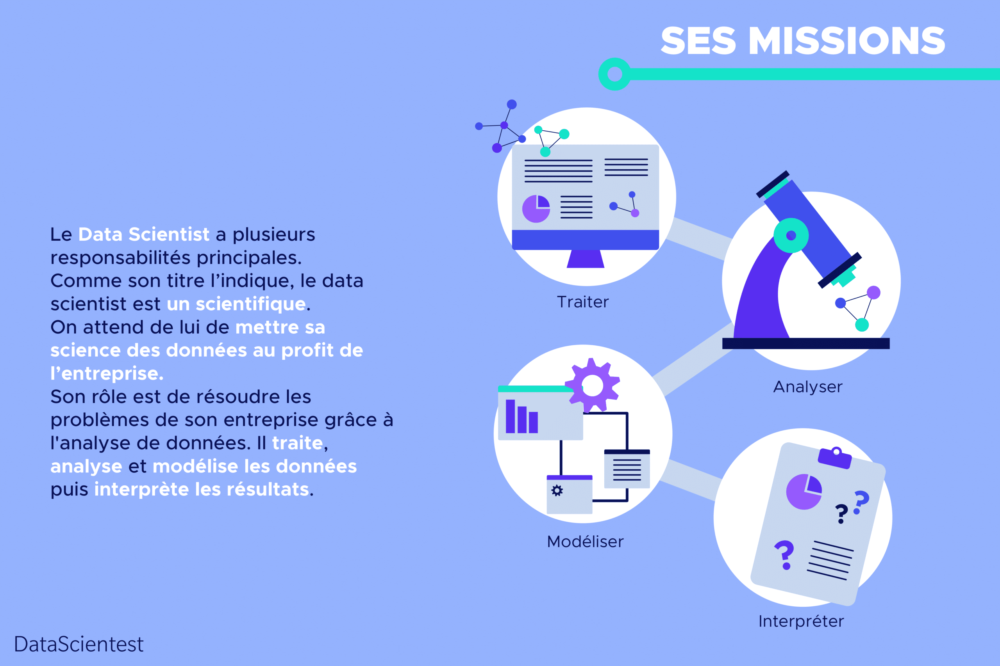

Les missions datascientiste
Le Data Scientist a plusieurs responsabilités principales.
Avant tout, et comme son titre l’indique, le data scientist est un scientifique, on attend de
lui de mettre sa science des données au profit de l’entreprise.
Son rôle est de résoudre les problèmes de son entreprise grâce à l’analyse de données.
Il traite, analyse et modélise les données puis interprète les résultats.Il est chargé de
déterminer la meilleure manière de répondre aux besoins métier et les données nécessaires à leur
mise en oeuvre.
Il définit les algorithmes d’analyses les plus pertinents pour répondre aux différents besoins
et développe des modèles descriptifs et prédictifs.
Il devra réaliser une veille sur les modèles d’analyse de données et savoir partager les
meilleures pratiques avec le reste de l’équipe.
Enfin, il peut être chargé de collecter de larges volumes de données non structurées pour les
transformer dans un format exploitable. Toutefois, il est souvent épaulé par le Data Engineer
dans cette tâche.